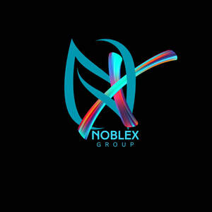

Trade Mark Journal No.2025/046 14 November 2025
UK00004287296 30 October 2025 (35)

- Class 35
- Executive recruitment services; Personnel recruitment agency services; Executive recruiting services; Consultancy of personnel recruitment; Personnel recruitment consultancy; Personnel recruitment services and employment agencies; Selection of executive personnel; Staff recruitment consultancy services; Recruitment of high-level management personnel; Personnel recruitment; Recruitment of personnel; Business recruitment consultancy; Employment agency services; Executive placement services; Consultancy and advisory services relating to personnel recruitment; Recruitment and personnel management services; Interviewing services [for personnel recruitment]; Employment recruiting consultancy; Executive selection services; Personnel placement and recruitment; Business management consultancy in the field of executive and leadership development; Recruitment consultancy services; Personnel recruitment services; Personnel management and employment consultancy; Executive search services; Employment recruitment; Recruitment of temporary personnel; Executive search and placement services; Permanent staff recruitment; Employment agencies; Recruitment services; Business management and organization consultancy; Business organization and management consultancy including personnel management; Management consultancy (Personnel -); Personnel management consultancy; Professional recruitment services; Business organisation and management consultancy in the field of personnel management; Personnel consultancy; Business management and organization consultancy services; Recruitment and placement services; Business management and organisation consultancy; Business management organisation consultancy; Business organisation and management consultancy; Human resources management and recruitment services; Corporate management consultancy; Business organisation and management consulting; Consultancy and advisory services relating to personnel management; Business organization consultancy; Consultancy and advisory services relating to personnel placement; Business management and organisation consultancy services; Business organization and management consulting; Personnel management consultancy services; Advisory services and information in business organization and management; Advisory services relating to business organisation and management.
Noblex Group Limited